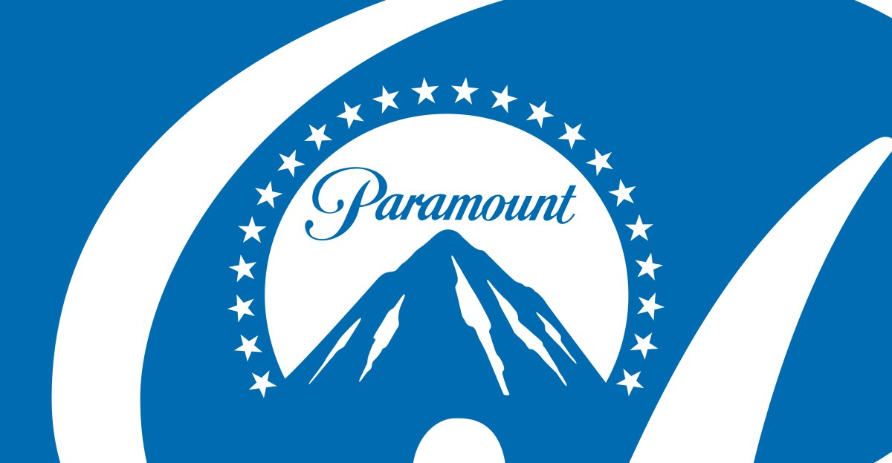

Technology · 22 Sep 2026
Paramount Reaches Settlement with States to Clear $110 Billion Warner Bros. Discovery Merger

Paramount has resolved a legal challenge from California and 11 other states, clearing a major hurdle for its $110 billion acquisition of Warner Bros. Discovery, though the settlement has drawn criticism from antitrust advocates.
Paramount has resolved an antitrust lawsuit brought by California and 11 other states, clearing a major hurdle for its $110 billion acquisition of Warner Bros. Discovery (The Verge). The settlement, announced in September 2026, removes the legal roadblock that had previously paused the megamerger following a federal judge's ruling that the combination would likely reduce competition.
Terms of the Settlement
Under the proposed consent decree filed with the court, the combined media giant must adhere to several structural and behavioral requirements:
- Theatrical Releases: Paramount is required to meet minimum theatrical film release quotas over the next five years, starting with 30 releases in years one and two, and 32 releases in subsequent years. At least four of these must be independent films, and at least 20 percent must be tentpole blockbusters with budgets of $50 million or more, opening on a minimum of 3,000 US screens within their first month. If the company fails to meet these metrics, it faces a $30 million penalty per missed film and the potential divestment of Miramax Studios.
- Production Commitments: The company committed to spending at least $300 million more on US film production compared to 2025 spending levels, alongside a five-year freeze on selling the Paramount Studios or Warner Bros. lots in California.
- Streaming and Operations: The merged entity must continue to offer a free streaming service, such as Pluto TV, while combining services like Paramount+ and HBO Max. The combined company is also set to emerge with nearly $80 billion in debt (Ars Technica).
- Editorial Independence: The settlement establishes rules for cable channel negotiations and mandates a news editorial independence board consisting of five established journalists with at least 10 years of experience to safeguard editorial independence at CBS and CNN. Additionally, the Writers Guild of America (WGA) settled its separate antitrust lawsuit against Paramount.
Reactions and Criticisms
California Attorney General Rob Bonta defended the agreement at a press conference, stating that it protects consumer choice, competition, and workers' futures while resolving antitrust concerns across all alleged markets. Paramount Chairman and CEO David Ellison expressed gratitude to the attorneys general and the WGA for reaching a resolution aimed at bolstering the Hollywood creative community and building a stronger industry.
However, the agreement drew sharp condemnation from antitrust advocates and several Democratic lawmakers. Critics, including former FTC Chair Lina Khan and representatives from advocacy groups like Free Press and Public Knowledge, argued that behavioral remedies routinely fail and that the settlement does not properly address the core loss of industry competition, reduced streaming choices, and fewer employers bidding for creative work. Some holdout states—including New York, Massachusetts, Connecticut, and Minnesota—ultimately backed down after concluding that continuing the expensive legal battle without California's leadership was impractical, though they secured the editorial boards for CBS and CNN prior to the finalization.
The resolution arrived just ahead of a ticking fee deadline that would have required Paramount to pay WBD shareholders 25 cents per share—costing roughly $7 million per day—for each quarter the transaction was delayed past September 30.
Sources
This article was produced by the C. O. Eric AI Newsroom from the cited sources. It is published only after automated evidence and safety checks.